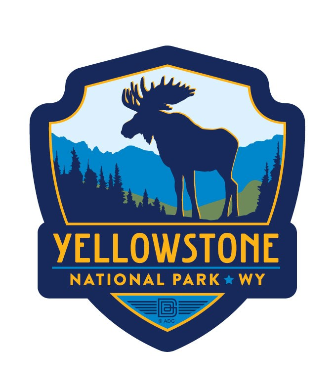

|  | Yellowstone National Park |
It's Wonderland. Old Faithful and the majority of the world's geysers are preserved here. They are the main reason the park was established in 1872 as America's first national park—an idea that spread worldwide. A mountain wilderness, home to grizzly bears, wolves, and herds of bison and elk, the park is the core of one of the last, nearly intact ecosystems in the Earth’s temperate zone.
Did You Know?
You cannot fish from Fishing Bridge. Until 1973 this was a very popular fishing location since the bridge crossed the Yellowstone River above a cutthroat trout spawning area. It is now a popular place to observe fish.
Yellowstone National Park Website